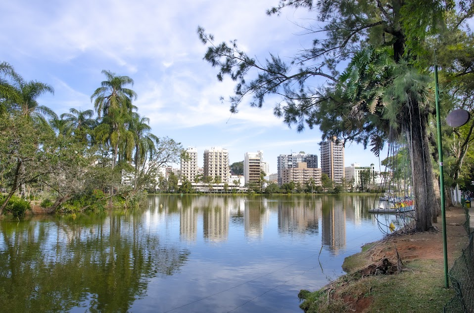

Se você pudesse beber na font de beleza ou na fonte da saúde você escolheria?
Pois saiba que experimentei as duas! ou melhor, provei das 9 fontes de águas naturais de São Lourenço
Diversas atraçoes em São Lourenço
- Parque das Águas
- Passei da Rota do Café
- Trem das Águas (Maria-Fumaça